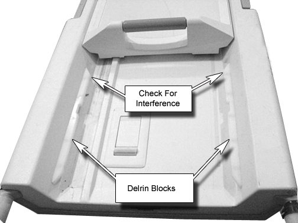

Operating Documentation
Direction 5133315-3, Rev# 14
Signa EXCITE HD 1.5T Service Methods
Module Version 1.0, Version Date 5/15/07
Operating Documentation |
Drive the Cradle into the magnet as shown in Illustration 1. Then drive the Cradle back onto the table. Verify that the Delrin Rails do not interfere with the cradle movement. If adjustments are needed, see Cradle Guide Rail Latch Adjustment.
Illustration 1: Delrin Block check
